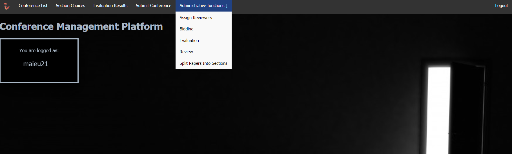
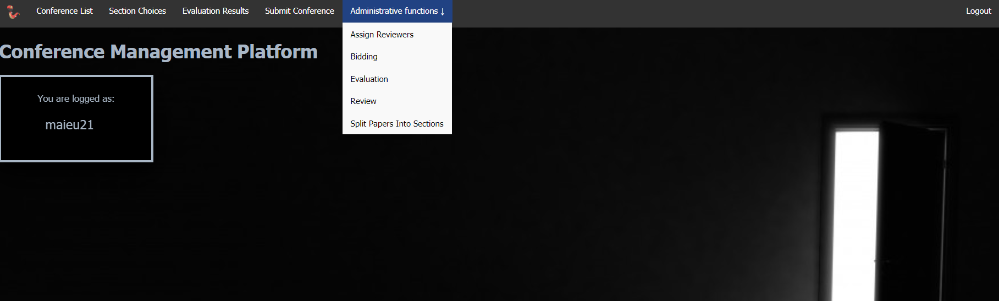

General Information Conference Management System (CMS)
The objective of a Conference Management System is to support the automatic management of information related to scientific conferences. This information concern: the authors submitting proposals, the members of the Program Committee, the submissions' abstract and full papers proposed, meta-information about these, the deadlines for different phases of sending proposals, assigning paper to reviewers, evaluation deadline and announcing the results of paper valuation. Once the accepted proposals are known, the different sections of the conference are decided; each accepted paper is planned to be presented in a section. Each conference participant has to pay the registration. The conference participants which can be: session chairs, speakers or listeners.
Once a steering committee decides to organize a conference edition, the information about the event is posted on the conference site. This information includes the name of the conference, the interval in which the event will take place, the "Call for papers", the deadlines, the Program Committee, the conference sections and program a. s. o.
Mainly there are 3 distinct phases regarding the management of the information preceded by a preliminary phase, the PC members (including the conference chair or the conference co- chairs) uploads information about their name, affiliation, email address, their personal web- page, their username for the CMS and the password for accessing the information about the conference. The chair or one of co-chairs have the permission to change deadlines by postponing them to later data.
In the first phase, each person interested to submit a proposal create its own user account fulfilling the information required (the name, affiliation, email address). Once the account is validated, the submitter logins, submit the abstract and fulfills the meta-information required: the name of the proposal, the keywords, the topics, the possible list of authors and their meta- information). Depending on the conference it is possible to upload also the full paper (usually a file in .pdf or .ms word format). Uploading proposals can be done before the deadline mentioned on the conference site and on the "Call for papers". It is possible to have two different deadlines: one for the abstract and another for the proposal. Until each deadline, users may upload new versions both for the abstract and the paper.
In the second phase, PC members are required to bid the proposals. Each PC member has to do a brief analyze of abstracts or papers in order say if they are pleased to review some papers, or if they are could evaluate some papers, or if they refuse to evaluate other papers. Once the bidding process closed (there is a deadline for bidding), the conference chair or co-chairs assign to each reviewer the papers required to be evaluated. By default any reviewer do not receive for evaluation a paper refused in the bidding phase. At least two different reviewers have to evaluate each paper. Usually there are three reviewers(evaluators) for each paper but depending on the conference level there can be also 4 reviewers. The result of each reviewer is one of the followings qualifiers: strong accept, accept, weak accept, borderline paper, weak reject, reject and strong reject. The papers whose evaluation do not contains any level of reject are accepted by default. Also, the papers not containing any accept will be rejected. In case of papers having contradictory evaluations the chair/co-chairs request reviewers to discuss in order to get closer evaluations. If this will not be possible, is up to the chair to decide if another new evaluation from a different reviewer will be required or if the paper will be rejected or accepted. The evaluation qualifier is justified by means of a set of recommendations that each reviewer attach to evaluated proposals. Once a reviewer uploads the results of its evaluation, she/he will see the other evaluations of the same paper delivered by other reviewers. After deciding about the acceptance or not for all submissions, the authors are announced by email about their results. Only papers accepted and presented on the conference will be published. After receiving the acceptance decision, authors are invited to improve their accepted papers taking into account reviewers recommendations. PC members excepting the chair/co-chairs can submit proposals by logging as authors. In this case, they have not the right to see neither which are the reviewers of their paper nor the comments between reviewers.
The third phase concerns the conference activities - mainly papers' presentation. Depending on the number of participants and of accepted papers, the conference is structured on different sections, some of them organized in parallel. Each section is supervised by a session chair which in the most cases is a member of the Program Committee (PC member) including the chair/co-chairs. Authors presenting their accepted papers are named speakers. Participants to each section are: chair, speakers and listeners. In order to assign the most appropriate rooms for each section, in case of important conferences (having hundreds of participants) these are invited to specify which are the sections they intend to participate in. A speaker cannot be the chair of the section in which she/he present his paper. Usually, before the presentation, speakers upload on the conference site the content of the presentation by means of a .pdf or .ppt(x) file.
 
